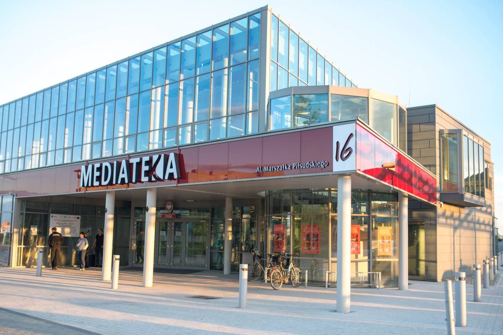
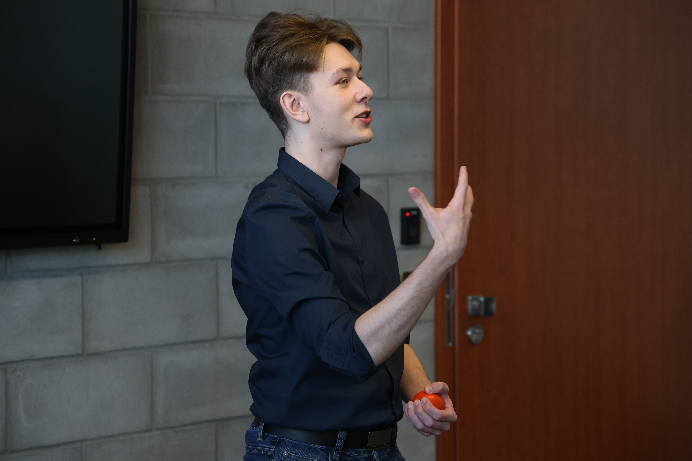
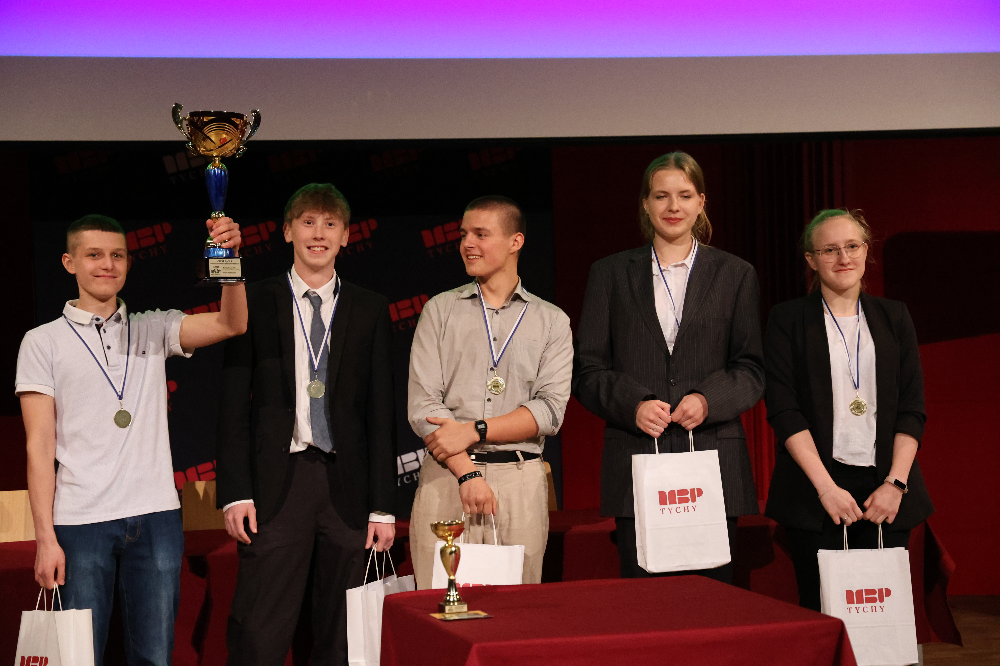
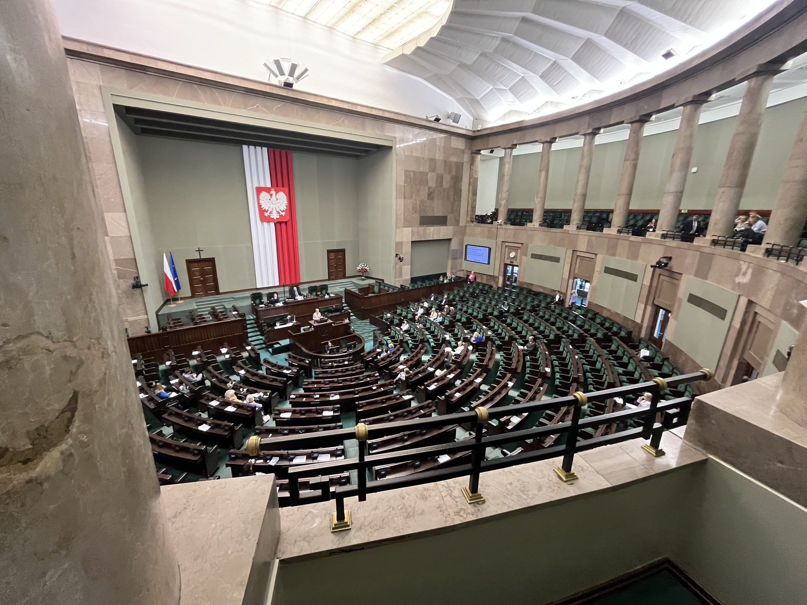
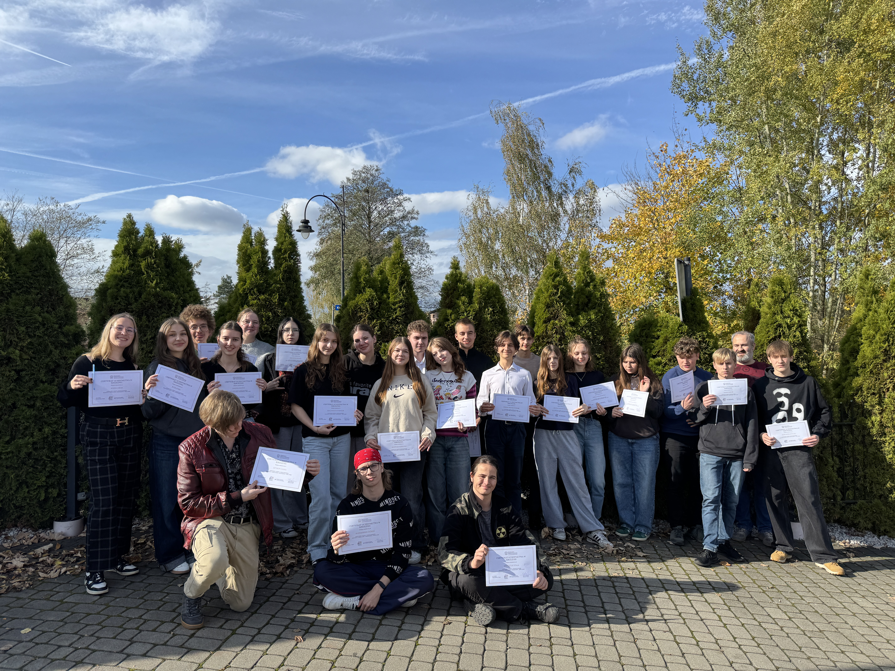
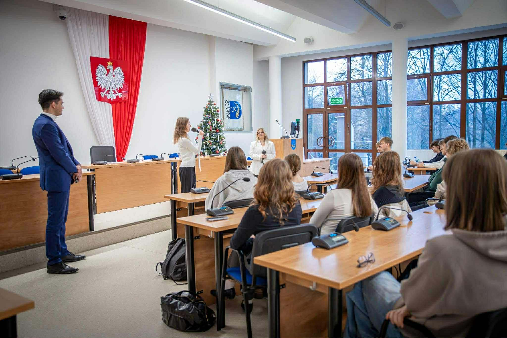
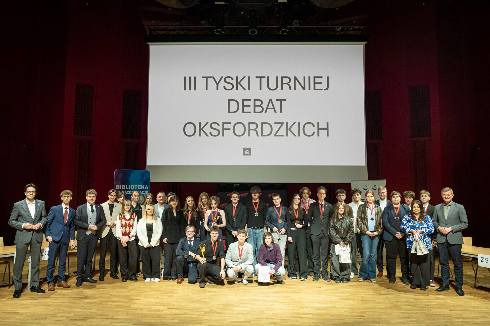

O nas
Poznaj historię Młodzieżowego Klubu Rozwoju Społeczno-Intelektualnego - od oddolnej inicjatywy po duże turnieje debat i ogólnopolskie projekty.
Powstanie klubu
Młodzieżowy Klub Rozwoju Społeczno-Intelektualnego powstał z inicjatywy trzech uczniów: Mariusza Grabowskiego, Seweryna Kantora oraz Bartosza Mamoka w grudniu 2023 roku. Inspiracją do jego powstania była potrzeba szerszych rozmów w gronie rówieśniczym oraz rozwoju intelektualnego.
Klub został założony we współpracy z Miejską Biblioteką Publiczną w Tychach, której główną siedzibą jest budynek Mediateki mieszczącej się przy ulicy Piłsudskiego 16. W założeniu klubu pomogła Pani Aleksandra Pabian.


Turniej debat oksfordzkich
Pierwszy Tyski Turniej Debat Oksfordzkich MKRSI odbył się po kilku miesiącach działalności klubu - w maju 2024 roku. Wzięły w nim udział trzy tyskie licea ogólnokształcące. W trakcie turnieju mieliśmy okazję gościć znamienite osobistości, w tym prezydenta miasta Tychy - Macieja Gramatykę.
„Klub to grupa młodych - jak sama nazwa wskazuje - osób, która spotyka się co miesiąc, by w wąskim gronie rozprawiać na różnorodne tematy, w tym kondycję współczesnego społeczeństwa, problem obojętności i braku empatii czy »pokolenia płatków śniegu«.”
- Tygodnik Twoje Tychy, wydanie nr 21/861, strona 2 ↗
Warsztaty „Lider w akcji”
Rok 2025 przyniósł naszemu klubowi wiele powodów do dumy. Mieliśmy okazję współpracować z Fundacją Europejski Instytut Outsourcingu, czego efektem były warsztaty „Lider w akcji”, które odbyły się 21 lutego. Szymon Matyja - prowadzący, pomógł uczestnikom rozwinąć swoje kompetencje w zakresie negocjacji, pracy zespołowej oraz umiejętności miękkich.


II Tyski Turniej Debat Oksfordzkich
W ostatnim tygodniu maja 2025 roku odbyła się druga edycja Tyskiego Turnieju Debat Oksfordzkich, trwająca cztery dni. W tym wydarzeniu wzięły udział drużyny z II Liceum Ogólnokształcącego, Liceum i technikum TEB oraz Zespołu Szkół nr 5.
Na widowni zasiadali uczniowie tych szkół oraz wśród specjalnych osobistości mieliśmy okazję ugościć m.in. Pana Pawła Grosmana - wiceprezydenta miasta Tychy oraz Panią Annę Krawczyk - dyrektor MBP Tychy. Dzięki uprzejmości Natalii Słomianny ukazała się relacja z wydarzenia w prasie.
Artykuł z tygodnika Twoje Tychy, nr 23/915, strona 5Wizyta w Sejmie RP
Na zaproszenie Pani Bożenny Hołowni mieliśmy okazję odwiedzić Sejm Rzeczypospolitej Polskiej. W ramach wizyty zwiedziliśmy najważniejsze części budynku, poznając jego historię. Szczególnym punktem programu była możliwość obejrzenia trwających obrad na sali plenarnej.


I i II Warsztaty w Zebrzydowicach
W lipcu 2025 roku, współpracując z Fundacją Europejski Instytut Outsourcingu, udało nam się zorganizować dla klubowiczów trzydniowe warsztaty w Zebrzydowicach. Pomogły one uczestnikom rozwinąć się w zakresie liderstwa, współpracy w grupie i negocjacji.
W dniach 20-22 października 2025 roku mieliśmy przyjemność uczestniczenia w projekcie Młody Obywatel, ponownie organizowanego przez Fundację Europejski Instytut Outsourcingu.
Spotkanie z radnym
11 grudnia 2025 roku zorganizowaliśmy „Spotkanie z radnym” - wydarzenie w ramach projektu Młody Obywatel. W budynku Urzędu Miasta Tychy, na sali obrad Rady Miasta gościliśmy wiceprezydent Hannę Skoczylas, radnego Mikołaja Figlarskiego oraz przewodniczącą Młodzieżowej Rady Miasta Blankę Michalską.

Rok 2025 w liczbach
Nasz klub w minionym roku to:
13
Spotkań w Mediatece
3
Warsztaty z Fundacją EIO
II
Turniej Debat Oksfordzkich
Sejm RP
Wizyta studyjna w Warszawie
Kongresy
Udział w forach młodzieżowych
To był bardzo dobry rok

III Tyski Turniej Debat Oksfordzkich
Na początku 2026 roku odbył się III Tyski Turniej Debat Oksfordzkich, zorganizowany we współpracy z Młodzieżową Radą Miasta Tychy oraz Miejską Biblioteką Publiczną. Wzięli w nim udział uczniowie II Liceum Ogólnokształcącego, Zespołu Szkół nr 1, Zespołu Szkół nr 5 oraz TEB Liceum i Technikum. Wydarzenie zgromadziło również przedstawicieli władz miasta, w tym wiceprezydenta Pawła Grosmana oraz radnych.
Czterodniowe zmagania zakończyły się zwycięstwem II Liceum Ogólnokształcącego im. C. K. Norwida. Relacja z turnieju ukazała się na łamach tygodnika Twoje Tychy.
Artykuł z tygodnika Twoje Tychy nr 17/962, strona 4Warsztaty „Szacunek między słowami”
16 września 2026 roku w CEZ Centrum Edukacji Zawodowej w Tychach nasi klubowicze, Zosia Zdziebko i Bartek Mamok, poprowadzili warsztaty „Szacunek między słowami”. Spotkanie upłynęło pod znakiem dobrej energii, otwartości oraz uważnego słuchania i rozmowy o sile wzajemnego szacunku.

Nasz klub, to miejsce, gdzie możemy swobodnie dzielić się swoimi poglądami i uczyć się od siebie nawzajem. Jesteśmy dumni z tego co osiągnęliśmy i z niecierpliwieniem czekamy na kolejne wyzwania i inicjatywy które przed nami.
„Kiedy mówisz, powtarzasz tylko to, czego się wcześniej dowiedziałeś. Kiedy słuchasz, możesz nauczyć się czegoś nowego”
- Dalajlama